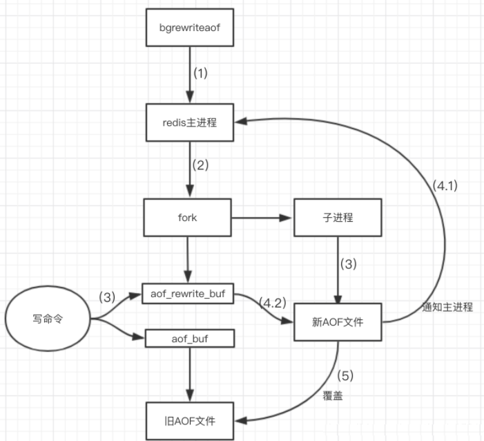
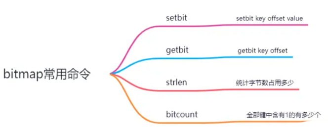
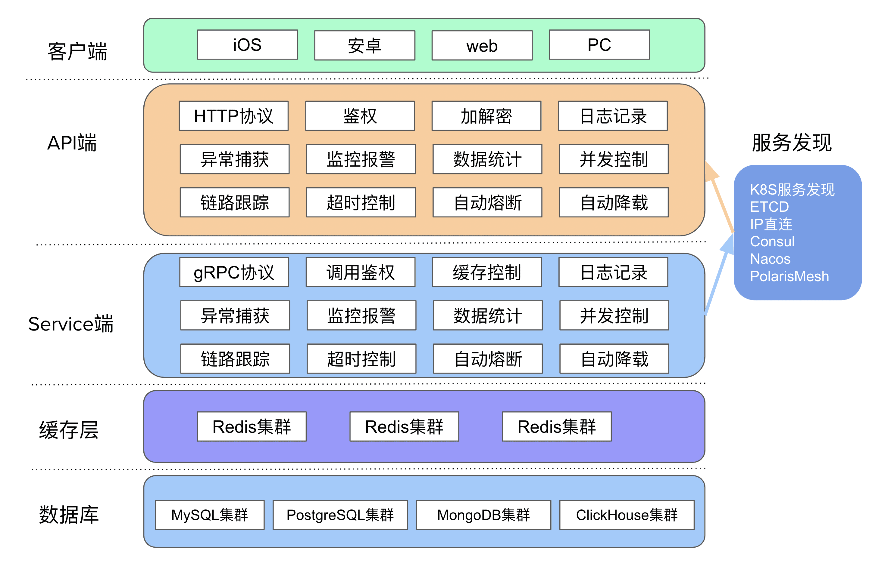
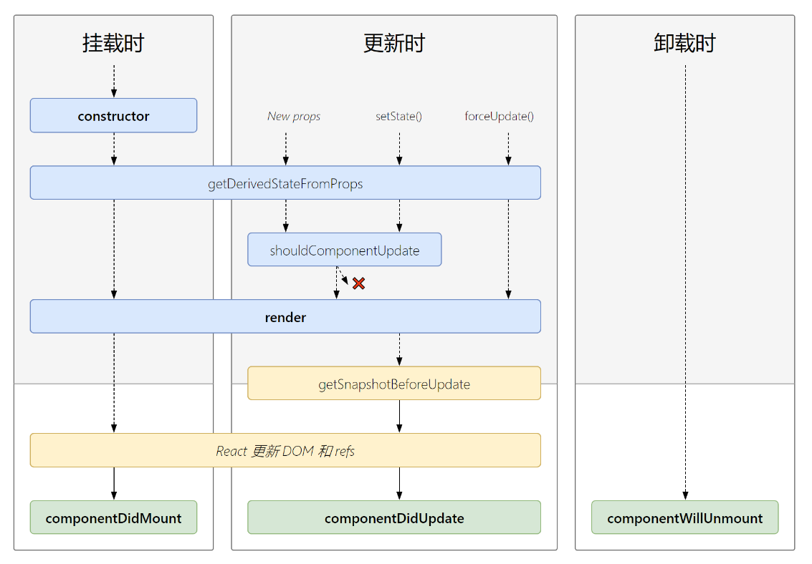
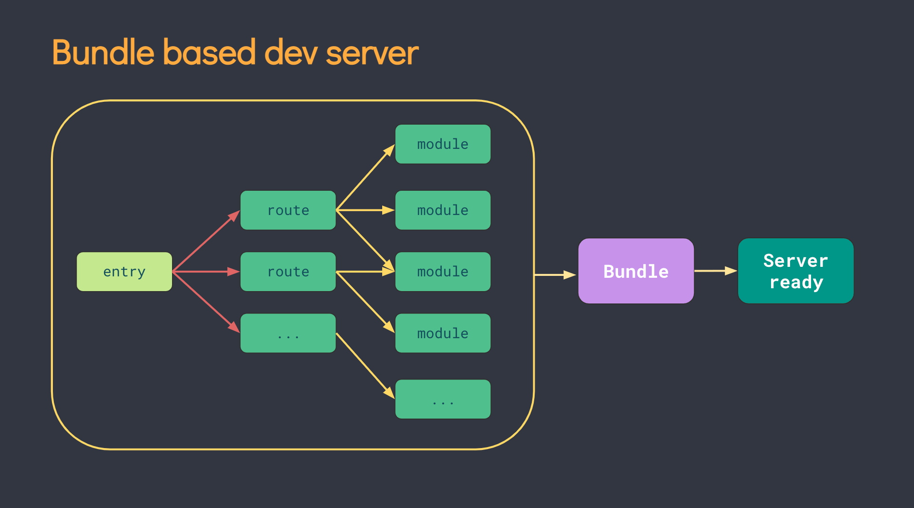
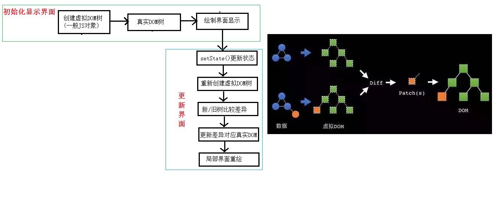
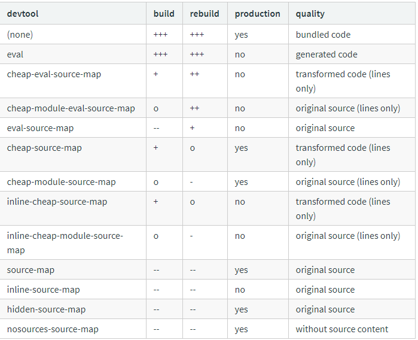
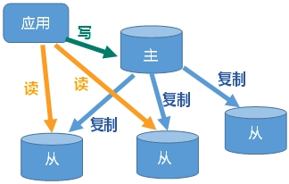
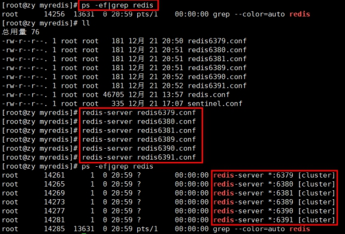
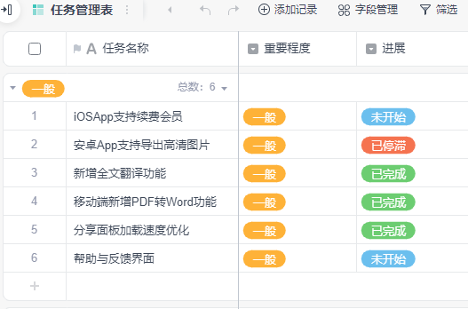

Hi! Nice to meet U！
I'm here！I'am ZeroYi!
这是一个记录技术笔记、技术解决方案、所见所想的个人网站!

记录对React的RDB和AOF的笔记。

理解新类型Bitmaps和setbit命令。

收集go-zero文档，其中也整理了微服务的服务治理，链路追踪，熔断，等常见算法。

记录了16.8以前和17以后的生命周期原理图。

记录了Vue3以及vite的笔记，备忘。

归纳setState，Hook，layload，组件优化，组件通信等。

完整封装一个NPM组件库。

React Router6的笔记，记录Component和Hooks备忘。

通过学习Redis的集群，举一反三理解其他应用的集群。

记录办公文档的接入，接入流程记录下来，记录多用户，多版本控制的实现流程，方便查阅。